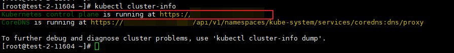

当后续需要通过kubeconfig认证的方式注册集群时，可参考本节操作获取kubeconfig配置文件。

kubectl config use-context internal
kubectl config use-context external
kubectl config use-context externalTLSVerify
kubectl config view --flatten > kubeconfig.yaml